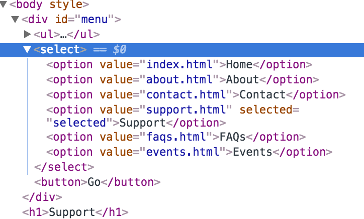

prop() vs. attr()
뷰포트 너비가 좁아질 때, 상단 가로 네비게이션 메뉴를 셀렉트 폼 형태로 만들어보고자 jQuery를 사용했다. ul li에서 선택한 메뉴는 select option에서도 선택되도록 했다. attr() 혹은 prop() 둘 중에 아무거나 써도 되기는 된다.
|
|
|
|
|
|
둘 다 똑같이 화면은 다음과 같다.
그러나 실행 후 개발자 도구에서 까보면 attr()을 사용한 경우에는 selected가 option 요소의 attribute로 들어가는 반면에,

prop()을 사용한 경우에는 option DOM property 중 selected의 상태만 true로 바뀌고(attr()을 사용한 경우에도 당연히 바뀜), 요소의 attribute는 바뀌지 않는다.
동작은 되지만 뭔가 찜찜한 상황이니 두 메소드의 사용법 차이에 관해, 그리고 attribute와 property가 본질적으로 어떻게 다른 건지 궁금해서 jQuery 공식 문서를 살펴보았다.
jQuery Docs 설명
attr()과 prop()의 차이점에 대해서는 jQuery 공식 문서에 설명이 아주 친절하게 잘 나와있다.
우선 각각의 메소드 정의부터 살펴보고 넘어가보고자 한다.
attr()
Get the value of an attribute for the first element in the set of matched elements or set one or more attributes for every matched element.
prop()
Get the value of a property for the first element in the set of matched elements or set one or more properties for every matched element.
어찌된 영문인지는 모르겠으나 attribute, property 이 두 단어 빼고는 설명을 고스란히 복붙해 놓았다. 복붙을 한 이유는 저 문장이 설명용으로 아주 최적화가 되었기 때문이 아닐까 하고 조심스레 생각해본다. 두 메소드 모두 요소의 attribute 혹은 property 중 매칭 되는 것을 반환하는 역할을 한다.
Attributes vs. Properties
두 문서 모두 하단에 Attributes vs. Properties 섹션을 마련하여 차이점을 설명하는 부분을 실어 놓았다. jQuery 1.6 버전 이전에는 몇몇 property들(예를 들어 selectedIndex, tagName, nodeName, nodeType, ownerDocument, defaultChecked, defaultSelected)의 값을 attr() 메서드로 얻어 오는 것이 가능했다고 한다.
이 property들은 attribute의 범위에 속하는 것들이 아닌데 attr()로 추출해 내는 것이 가능했으니 문제였다. 값을 얻어 오는 것 까지는 괜찮았으나, 이로 인해 말썽이 종종 일어났다고 한다. 물론 경험해 보지는 않았으니 어떤 결과를 불러일으켰는지는 모르겠다. (아마 attr()로 얻어 낸 값과 변경된 값의 싱크가 맞지 않아서 동작이 제대로 안되지 않았을까 추측해본다.)
때문에 attr() 메소드로 가져와서는 안되는 property 값을 가져와서 원치 않는 상황이 발생하는 것을 방지하기 위해, jQuery 1.6 부터는 prop() 메소드를 사용해야지만 이 값들을 얻어 올 수 있도록 바뀌었다고 한다.
true 혹은 false로 그 값이 표현되는 불리언 attribute의 예를 들어보자. 다음과 같은 HTML 마크업으로 DOM 요소가 정의되었다. 그리고 이 요소가 자바스크립트 코드 내에서는 elem이라는 이름의 변수로 정의되었다고 하자.
|
|
jQuery 문서에서는 이 다음에 attribute/property 메소드에 대한 테이블이 나오지만, 더 재미있는 내용은 그 밑의 텍스트다. W3C 폼 명세서에 따르면, checked attribute는 불리언 값을 가진다. 명세서에도 나와 있듯이, 대부분의 브라우저는 불리언 attribute의 형식을 최소화(minimize)한 형태로 나타낸다.
In HTML, boolean attributes may appear in minimized form – the attribute’s value appears alone in the element’s start tag. Thus, selected may be set by writing:
<OPTION selected>instead of:<OPTION selected="selected">. Authors should be aware that many user agents only recognize the minimized form of boolean attributes and not the full form.
불리언 값을 가지는 attribute는 코드 작성자가 안에 무슨 값을 넣든 (심지어 false를 넣더라도) true로 설정한다는 뜻이다. checked attribute의 값은 checked property의 값과 일치하지 않는다. 단지 체크박스의 초기값 설정에 사용될 뿐이다. 이와 같은 역할을 하는 property는 checked가 아니라, defaultChecked이다.
checked property는 체크박스의 상태 변경에 관여하지만, checked attribute는 상태 변화에 관여하지 않는다. 그렇기 때문에 체크박스가 사용자에 의해 체크 되었는지, 안 되었는지 판단하기 위해서는 checked property의 값을 봐야 한다. 다음과 같은 세 가지 메소드로 그 값을 얻어낼 수 있다.
if ( elem.checked )if ( $( elem ).prop( "checked" ) )if ( $( elem ).is( ":checked" ) )
위 내용은 checked 뿐만 아니라 selected, value등 계속 변화하는 모든 동적인 attribute에 해당되는 내용이다.
아래 테이블은 지금까지 다룬 내용을 정리한 것이다.
elem.checked |
true (Boolean) Will change with checkbox state |
|---|---|
$( elem ).prop( "checked" ) |
true (Boolean) Will change with checkbox state |
elem.getAttribute( "checked" ) |
"checked" (String) Initial state of the checkbox; does not change |
$( elem ).attr( "checked" ) (1.6) |
"checked" (String) Initial state of the checkbox; does not change |
$( elem ).attr( "checked" ) (1.6.1+) |
"checked" (String) Will change with checkbox state |
$( elem ).attr( "checked" ) (pre-1.6) |
true (Boolean) Changed with checkbox state |
테이블의 5번째 행을 보면 1.6.1 버전 이상에서 attr()을 사용할 시 이 값은 체크박스 상태에 따라 변한다고 되어 있다. 직접 codepen에서 selected attribute를 사용하여 확인해 본 결과(codepen link), 테이블의 내용과는 다르게 jQuery 3.3.1 버전에서 attr() 메소드를 사용하였는데도 셀렉트 박스의 상태에 따라 값이 변경되지 않았다. 테이블 내용이 업데이트 되지 않은건지, 아니면 셀렉트 박스인 경우와 셀렉트 박스인 경우 그 동작이 각각 다른 건지 확인해 볼 필요가 있다.
결론
attr() 메소드는 셀렉트 박스의 기본 옵션값을 지정해 주는 역할을 하므로 초기화와 관련된 부분에서는 attr() 메소드를 사용하는 것이 적절하고, 한번 초기화 후에 그 값이 변경되는 경우에는 prop()을 사용하는 것이 적절한 선택이라 생각한다. (jQuery의 친절한 공식 문서의 의도와 부합하기도 하고)
Comments